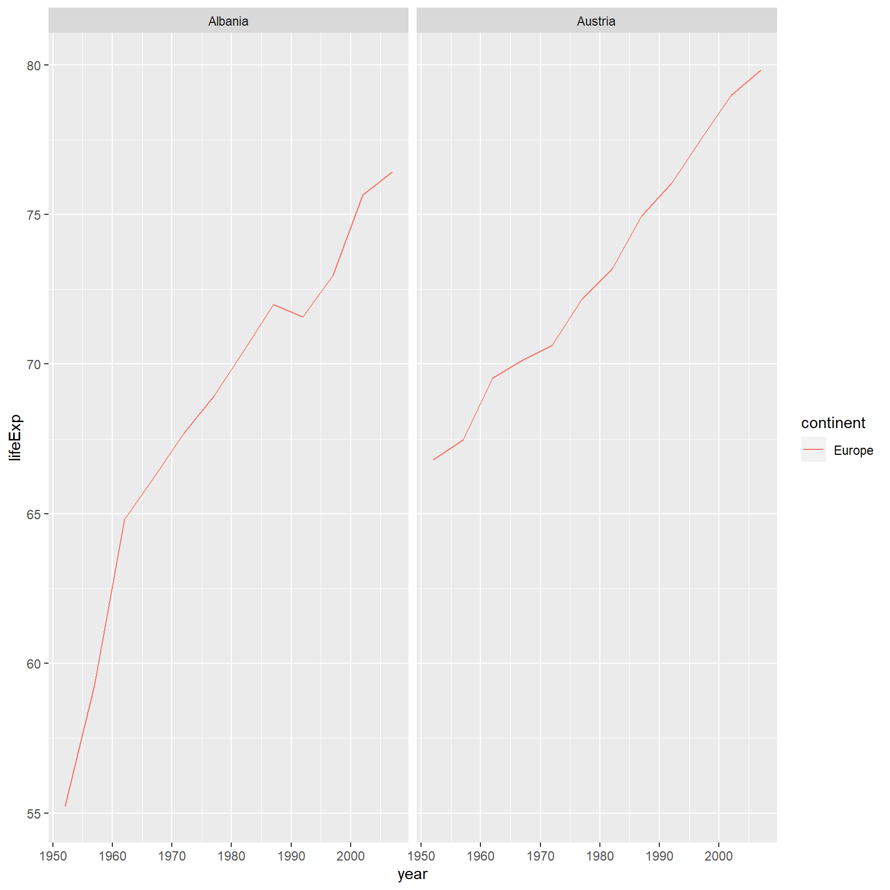
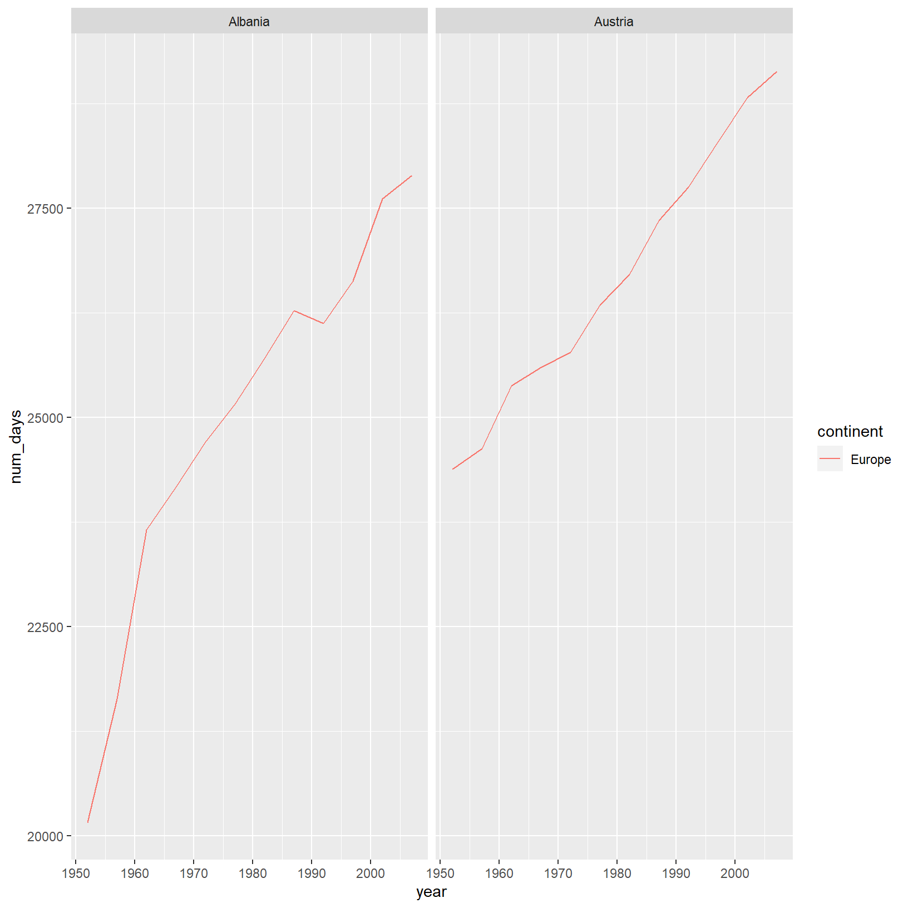

<!DOCTYPE html>
<html lang="" xml:lang="">
<head>

  <meta charset="utf-8" />
  <meta http-equiv="X-UA-Compatible" content="IE=edge" />
  <title>Chapter 8 Dataframe Manipulation with dplyr | Seeking Help from Others with reprex</title>
  <meta name="description" content="This book contains materials for a 2 day Introduction to R workshop" />
  <meta name="generator" content="bookdown 0.18 and GitBook 2.6.7" />

  <meta property="og:title" content="Chapter 8 Dataframe Manipulation with dplyr | Seeking Help from Others with reprex" />
  <meta property="og:type" content="book" />
  
  
  <meta property="og:description" content="This book contains materials for a 2 day Introduction to R workshop" />
  <meta name="github-repo" content="bcgov/ds-intro-to-r-2-day" />

  <meta name="twitter:card" content="summary" />
  <meta name="twitter:title" content="Chapter 8 Dataframe Manipulation with dplyr | Seeking Help from Others with reprex" />
  
  <meta name="twitter:description" content="This book contains materials for a 2 day Introduction to R workshop" />
  

<meta name="author" content="Sam Albers, Stephanie Hazlitt, Genevieve Perkins &amp; Andy Teucher" />


<meta name="date" content="2020-05-01" />

  <meta name="viewport" content="width=device-width, initial-scale=1" />
  <meta name="apple-mobile-web-app-capable" content="yes" />
  <meta name="apple-mobile-web-app-status-bar-style" content="black" />
  
  
<link rel="prev" href="creating-publication-quality-graphics-with-ggplot2.html"/>
<link rel="next" href="dataframe-manipulation-with-tidyr.html"/>
<script src="libs/header-attrs-2.1/header-attrs.js"></script>
<script src="libs/jquery-2.2.3/jquery.min.js"></script>
<link href="libs/gitbook-2.6.7/css/style.css" rel="stylesheet" />
<link href="libs/gitbook-2.6.7/css/plugin-table.css" rel="stylesheet" />
<link href="libs/gitbook-2.6.7/css/plugin-bookdown.css" rel="stylesheet" />
<link href="libs/gitbook-2.6.7/css/plugin-highlight.css" rel="stylesheet" />
<link href="libs/gitbook-2.6.7/css/plugin-search.css" rel="stylesheet" />
<link href="libs/gitbook-2.6.7/css/plugin-fontsettings.css" rel="stylesheet" />
<link href="libs/gitbook-2.6.7/css/plugin-clipboard.css" rel="stylesheet" />


<style type="text/css">
pre > code.sourceCode { white-space: pre; position: relative; }
pre > code.sourceCode > span { display: inline-block; line-height: 1.25; }
pre > code.sourceCode > span:empty { height: 1.2em; }
code.sourceCode > span { color: inherit; text-decoration: inherit; }
pre.sourceCode { margin: 0; }
@media screen {
div.sourceCode { overflow: auto; }
}
@media print {
pre > code.sourceCode { white-space: pre-wrap; }
pre > code.sourceCode > span { text-indent: -5em; padding-left: 5em; }
}
pre.numberSource code
  { counter-reset: source-line 0; }
pre.numberSource code > span
  { position: relative; left: -4em; counter-increment: source-line; }
pre.numberSource code > span > a:first-child::before
  { content: counter(source-line);
    position: relative; left: -1em; text-align: right; vertical-align: baseline;
    border: none; display: inline-block;
    -webkit-touch-callout: none; -webkit-user-select: none;
    -khtml-user-select: none; -moz-user-select: none;
    -ms-user-select: none; user-select: none;
    padding: 0 4px; width: 4em;
    color: #aaaaaa;
  }
pre.numberSource { margin-left: 3em; border-left: 1px solid #aaaaaa;  padding-left: 4px; }
div.sourceCode
  {   }
@media screen {
pre > code.sourceCode > span > a:first-child::before { text-decoration: underline; }
}
code span.al { color: #ff0000; font-weight: bold; } /* Alert */
code span.an { color: #60a0b0; font-weight: bold; font-style: italic; } /* Annotation */
code span.at { color: #7d9029; } /* Attribute */
code span.bn { color: #40a070; } /* BaseN */
code span.bu { } /* BuiltIn */
code span.cf { color: #007020; font-weight: bold; } /* ControlFlow */
code span.ch { color: #4070a0; } /* Char */
code span.cn { color: #880000; } /* Constant */
code span.co { color: #60a0b0; font-style: italic; } /* Comment */
code span.cv { color: #60a0b0; font-weight: bold; font-style: italic; } /* CommentVar */
code span.do { color: #ba2121; font-style: italic; } /* Documentation */
code span.dt { color: #902000; } /* DataType */
code span.dv { color: #40a070; } /* DecVal */
code span.er { color: #ff0000; font-weight: bold; } /* Error */
code span.ex { } /* Extension */
code span.fl { color: #40a070; } /* Float */
code span.fu { color: #06287e; } /* Function */
code span.im { } /* Import */
code span.in { color: #60a0b0; font-weight: bold; font-style: italic; } /* Information */
code span.kw { color: #007020; font-weight: bold; } /* Keyword */
code span.op { color: #666666; } /* Operator */
code span.ot { color: #007020; } /* Other */
code span.pp { color: #bc7a00; } /* Preprocessor */
code span.sc { color: #4070a0; } /* SpecialChar */
code span.ss { color: #bb6688; } /* SpecialString */
code span.st { color: #4070a0; } /* String */
code span.va { color: #19177c; } /* Variable */
code span.vs { color: #4070a0; } /* VerbatimString */
code span.wa { color: #60a0b0; font-weight: bold; font-style: italic; } /* Warning */
</style>

<link rel="stylesheet" href="style.css" type="text/css" />
</head>

<body>


  <div class="book without-animation with-summary font-size-2 font-family-1" data-basepath=".">

    <div class="book-summary">
      <nav role="navigation">

<ul class="summary">
<li><a href="./">Introduction to Data Science using R Workshop</a></li>

<li class="divider"></li>
<li class="chapter" data-level="1" data-path="index.html"><a href="index.html"><i class="fa fa-check"></i><b>1</b> Preface</a></li>
<li class="chapter" data-level="2" data-path="introduction-to-r-and-rstudio.html"><a href="introduction-to-r-and-rstudio.html"><i class="fa fa-check"></i><b>2</b> Introduction to R and RStudio</a>
<ul>
<li class="chapter" data-level="2.1" data-path="introduction-to-r-and-rstudio.html"><a href="introduction-to-r-and-rstudio.html#motivation"><i class="fa fa-check"></i><b>2.1</b> Motivation</a></li>
<li class="chapter" data-level="2.2" data-path="introduction-to-r-and-rstudio.html"><a href="introduction-to-r-and-rstudio.html#before-starting-the-workshop"><i class="fa fa-check"></i><b>2.2</b> Before Starting The Workshop</a></li>
<li class="chapter" data-level="2.3" data-path="introduction-to-r-and-rstudio.html"><a href="introduction-to-r-and-rstudio.html#introduction-to-rstudio"><i class="fa fa-check"></i><b>2.3</b> Introduction to RStudio</a></li>
<li class="chapter" data-level="2.4" data-path="introduction-to-r-and-rstudio.html"><a href="introduction-to-r-and-rstudio.html#work-flow-within-rstudio"><i class="fa fa-check"></i><b>2.4</b> Work flow within RStudio</a></li>
<li class="chapter" data-level="2.5" data-path="introduction-to-r-and-rstudio.html"><a href="introduction-to-r-and-rstudio.html#introduction-to-r"><i class="fa fa-check"></i><b>2.5</b> Introduction to R</a></li>
<li class="chapter" data-level="2.6" data-path="introduction-to-r-and-rstudio.html"><a href="introduction-to-r-and-rstudio.html#using-r-as-a-calculator"><i class="fa fa-check"></i><b>2.6</b> Using R as a calculator</a></li>
<li class="chapter" data-level="2.7" data-path="introduction-to-r-and-rstudio.html"><a href="introduction-to-r-and-rstudio.html#mathematical-functions"><i class="fa fa-check"></i><b>2.7</b> Mathematical functions</a></li>
<li class="chapter" data-level="2.8" data-path="introduction-to-r-and-rstudio.html"><a href="introduction-to-r-and-rstudio.html#comparing-things"><i class="fa fa-check"></i><b>2.8</b> Comparing things</a></li>
<li class="chapter" data-level="2.9" data-path="introduction-to-r-and-rstudio.html"><a href="introduction-to-r-and-rstudio.html#variables-and-assignment"><i class="fa fa-check"></i><b>2.9</b> Variables and assignment</a></li>
<li class="chapter" data-level="2.10" data-path="introduction-to-r-and-rstudio.html"><a href="introduction-to-r-and-rstudio.html#vectorization"><i class="fa fa-check"></i><b>2.10</b> Vectorization</a></li>
<li class="chapter" data-level="2.11" data-path="introduction-to-r-and-rstudio.html"><a href="introduction-to-r-and-rstudio.html#managing-your-environment"><i class="fa fa-check"></i><b>2.11</b> Managing your environment</a></li>
<li class="chapter" data-level="2.12" data-path="introduction-to-r-and-rstudio.html"><a href="introduction-to-r-and-rstudio.html#r-packages"><i class="fa fa-check"></i><b>2.12</b> R Packages</a></li>
</ul></li>
<li class="chapter" data-level="3" data-path="seeking-help-in-r.html"><a href="seeking-help-in-r.html"><i class="fa fa-check"></i><b>3</b> Seeking Help in R</a>
<ul>
<li class="chapter" data-level="3.1" data-path="seeking-help-in-r.html"><a href="seeking-help-in-r.html#reading-help-files"><i class="fa fa-check"></i><b>3.1</b> Reading Help files</a></li>
<li class="chapter" data-level="3.2" data-path="seeking-help-in-r.html"><a href="seeking-help-in-r.html#special-operators"><i class="fa fa-check"></i><b>3.2</b> Special Operators</a></li>
<li class="chapter" data-level="3.3" data-path="seeking-help-in-r.html"><a href="seeking-help-in-r.html#getting-help-on-packages"><i class="fa fa-check"></i><b>3.3</b> Getting help on packages</a></li>
<li class="chapter" data-level="3.4" data-path="seeking-help-in-r.html"><a href="seeking-help-in-r.html#when-you-kind-of-remember-the-function"><i class="fa fa-check"></i><b>3.4</b> When you kind of remember the function</a></li>
<li class="chapter" data-level="3.5" data-path="seeking-help-in-r.html"><a href="seeking-help-in-r.html#when-you-have-no-idea-where-to-begin"><i class="fa fa-check"></i><b>3.5</b> When you have no idea where to begin</a></li>
</ul></li>
<li class="chapter" data-level="4" data-path="project-management-with-rstudio.html"><a href="project-management-with-rstudio.html"><i class="fa fa-check"></i><b>4</b> Project Management With RStudio</a>
<ul>
<li class="chapter" data-level="4.1" data-path="project-management-with-rstudio.html"><a href="project-management-with-rstudio.html#introduction"><i class="fa fa-check"></i><b>4.1</b> Introduction</a></li>
<li class="chapter" data-level="4.2" data-path="project-management-with-rstudio.html"><a href="project-management-with-rstudio.html#a-possible-solution"><i class="fa fa-check"></i><b>4.2</b> A possible solution</a></li>
<li class="chapter" data-level="4.3" data-path="project-management-with-rstudio.html"><a href="project-management-with-rstudio.html#best-practices-for-project-organization"><i class="fa fa-check"></i><b>4.3</b> Best practices for project organization</a>
<ul>
<li class="chapter" data-level="4.3.1" data-path="project-management-with-rstudio.html"><a href="project-management-with-rstudio.html#treat-data-as-read-only"><i class="fa fa-check"></i><b>4.3.1</b> Treat data as read only</a></li>
<li class="chapter" data-level="4.3.2" data-path="project-management-with-rstudio.html"><a href="project-management-with-rstudio.html#data-cleaning"><i class="fa fa-check"></i><b>4.3.2</b> Data Cleaning</a></li>
<li class="chapter" data-level="4.3.3" data-path="project-management-with-rstudio.html"><a href="project-management-with-rstudio.html#treat-generated-output-as-disposable"><i class="fa fa-check"></i><b>4.3.3</b> Treat generated output as disposable</a></li>
<li class="chapter" data-level="4.3.4" data-path="project-management-with-rstudio.html"><a href="project-management-with-rstudio.html#separate-function-definition-and-application"><i class="fa fa-check"></i><b>4.3.4</b> Separate function definition and application</a></li>
<li class="chapter" data-level="4.3.5" data-path="project-management-with-rstudio.html"><a href="project-management-with-rstudio.html#version-control"><i class="fa fa-check"></i><b>4.3.5</b> Version Control</a></li>
</ul></li>
</ul></li>
<li class="chapter" data-level="5" data-path="data-structures.html"><a href="data-structures.html"><i class="fa fa-check"></i><b>5</b> Data Structures</a>
<ul>
<li class="chapter" data-level="5.1" data-path="data-structures.html"><a href="data-structures.html#the-readr-package"><i class="fa fa-check"></i><b>5.1</b> The <em>readr</em> package</a></li>
<li class="chapter" data-level="5.2" data-path="data-structures.html"><a href="data-structures.html#data-types"><i class="fa fa-check"></i><b>5.2</b> Data Types</a></li>
<li class="chapter" data-level="5.3" data-path="data-structures.html"><a href="data-structures.html#vectors-and-type-coercion"><i class="fa fa-check"></i><b>5.3</b> Vectors and Type Coercion</a></li>
<li class="chapter" data-level="5.4" data-path="data-structures.html"><a href="data-structures.html#data-frames"><i class="fa fa-check"></i><b>5.4</b> Data Frames</a></li>
<li class="chapter" data-level="5.5" data-path="data-structures.html"><a href="data-structures.html#factors"><i class="fa fa-check"></i><b>5.5</b> Factors</a></li>
<li class="chapter" data-level="5.6" data-path="data-structures.html"><a href="data-structures.html#lists"><i class="fa fa-check"></i><b>5.6</b> Lists</a></li>
<li class="chapter" data-level="5.7" data-path="data-structures.html"><a href="data-structures.html#matrices"><i class="fa fa-check"></i><b>5.7</b> Matrices</a></li>
</ul></li>
<li class="chapter" data-level="6" data-path="exploring-data-frames.html"><a href="exploring-data-frames.html"><i class="fa fa-check"></i><b>6</b> Exploring Data Frames</a>
<ul>
<li class="chapter" data-level="6.1" data-path="exploring-data-frames.html"><a href="exploring-data-frames.html#realistic-example"><i class="fa fa-check"></i><b>6.1</b> Realistic example</a></li>
<li class="chapter" data-level="6.2" data-path="exploring-data-frames.html"><a href="exploring-data-frames.html#basic-subsetting"><i class="fa fa-check"></i><b>6.2</b> Basic subsetting</a>
<ul>
<li class="chapter" data-level="6.2.1" data-path="exploring-data-frames.html"><a href="exploring-data-frames.html#selecting-rows"><i class="fa fa-check"></i><b>6.2.1</b> Selecting rows</a></li>
</ul></li>
</ul></li>
<li class="chapter" data-level="7" data-path="creating-publication-quality-graphics-with-ggplot2.html"><a href="creating-publication-quality-graphics-with-ggplot2.html"><i class="fa fa-check"></i><b>7</b> Creating Publication-Quality Graphics with ggplot2</a>
<ul>
<li class="chapter" data-level="7.1" data-path="creating-publication-quality-graphics-with-ggplot2.html"><a href="creating-publication-quality-graphics-with-ggplot2.html#layers"><i class="fa fa-check"></i><b>7.1</b> Layers</a></li>
<li class="chapter" data-level="7.2" data-path="creating-publication-quality-graphics-with-ggplot2.html"><a href="creating-publication-quality-graphics-with-ggplot2.html#transformations-and-statistics"><i class="fa fa-check"></i><b>7.2</b> Transformations and statistics</a></li>
<li class="chapter" data-level="7.3" data-path="creating-publication-quality-graphics-with-ggplot2.html"><a href="creating-publication-quality-graphics-with-ggplot2.html#multi-panel-figures"><i class="fa fa-check"></i><b>7.3</b> Multi-panel figures</a></li>
<li class="chapter" data-level="7.4" data-path="creating-publication-quality-graphics-with-ggplot2.html"><a href="creating-publication-quality-graphics-with-ggplot2.html#modifying-text"><i class="fa fa-check"></i><b>7.4</b> Modifying text</a></li>
<li class="chapter" data-level="7.5" data-path="creating-publication-quality-graphics-with-ggplot2.html"><a href="creating-publication-quality-graphics-with-ggplot2.html#exporting-the-plot"><i class="fa fa-check"></i><b>7.5</b> Exporting the plot</a></li>
</ul></li>
<li class="chapter" data-level="8" data-path="dataframe-manipulation-with-dplyr.html"><a href="dataframe-manipulation-with-dplyr.html"><i class="fa fa-check"></i><b>8</b> Dataframe Manipulation with dplyr</a>
<ul>
<li class="chapter" data-level="8.1" data-path="dataframe-manipulation-with-dplyr.html"><a href="dataframe-manipulation-with-dplyr.html#the-dplyr-package"><i class="fa fa-check"></i><b>8.1</b> The <code>dplyr</code> package</a></li>
<li class="chapter" data-level="8.2" data-path="dataframe-manipulation-with-dplyr.html"><a href="dataframe-manipulation-with-dplyr.html#using-select"><i class="fa fa-check"></i><b>8.2</b> Using select()</a></li>
<li class="chapter" data-level="8.3" data-path="dataframe-manipulation-with-dplyr.html"><a href="dataframe-manipulation-with-dplyr.html#using-filter"><i class="fa fa-check"></i><b>8.3</b> Using filter()</a></li>
<li class="chapter" data-level="8.4" data-path="dataframe-manipulation-with-dplyr.html"><a href="dataframe-manipulation-with-dplyr.html#using-filter-with-pipes"><i class="fa fa-check"></i><b>8.4</b> Using filter() with pipes</a></li>
<li class="chapter" data-level="8.5" data-path="dataframe-manipulation-with-dplyr.html"><a href="dataframe-manipulation-with-dplyr.html#using-group_by-and-summarize"><i class="fa fa-check"></i><b>8.5</b> Using group_by() and summarize()</a></li>
<li class="chapter" data-level="8.6" data-path="dataframe-manipulation-with-dplyr.html"><a href="dataframe-manipulation-with-dplyr.html#using-summarize"><i class="fa fa-check"></i><b>8.6</b> Using summarize()</a></li>
<li class="chapter" data-level="8.7" data-path="dataframe-manipulation-with-dplyr.html"><a href="dataframe-manipulation-with-dplyr.html#count-and-n"><i class="fa fa-check"></i><b>8.7</b> count() and n()</a></li>
<li class="chapter" data-level="8.8" data-path="dataframe-manipulation-with-dplyr.html"><a href="dataframe-manipulation-with-dplyr.html#using-mutate"><i class="fa fa-check"></i><b>8.8</b> Using mutate()</a></li>
<li class="chapter" data-level="8.9" data-path="dataframe-manipulation-with-dplyr.html"><a href="dataframe-manipulation-with-dplyr.html#connect-mutate-with-logical-filtering-ifelse"><i class="fa fa-check"></i><b>8.9</b> Connect mutate with logical filtering: ifelse</a></li>
<li class="chapter" data-level="8.10" data-path="dataframe-manipulation-with-dplyr.html"><a href="dataframe-manipulation-with-dplyr.html#combining-dplyr-and-ggplot2"><i class="fa fa-check"></i><b>8.10</b> Combining <code>dplyr</code> and <code>ggplot2</code></a></li>
<li class="chapter" data-level="8.11" data-path="dataframe-manipulation-with-dplyr.html"><a href="dataframe-manipulation-with-dplyr.html#other-great-resources"><i class="fa fa-check"></i><b>8.11</b> Other great resources</a></li>
</ul></li>
<li class="chapter" data-level="9" data-path="dataframe-manipulation-with-tidyr.html"><a href="dataframe-manipulation-with-tidyr.html"><i class="fa fa-check"></i><b>9</b> Dataframe Manipulation with tidyr</a>
<ul>
<li class="chapter" data-level="9.1" data-path="dataframe-manipulation-with-tidyr.html"><a href="dataframe-manipulation-with-tidyr.html#getting-started"><i class="fa fa-check"></i><b>9.1</b> Getting started</a></li>
<li class="chapter" data-level="9.2" data-path="dataframe-manipulation-with-tidyr.html"><a href="dataframe-manipulation-with-tidyr.html#convert-long-format-with-gather"><i class="fa fa-check"></i><b>9.2</b> Convert long format with gather()</a></li>
<li class="chapter" data-level="9.3" data-path="dataframe-manipulation-with-tidyr.html"><a href="dataframe-manipulation-with-tidyr.html#advantage-to-plotting-and-tables"><i class="fa fa-check"></i><b>9.3</b> Advantage to plotting and tables</a></li>
<li class="chapter" data-level="9.4" data-path="dataframe-manipulation-with-tidyr.html"><a href="dataframe-manipulation-with-tidyr.html#other-great-resources-1"><i class="fa fa-check"></i><b>9.4</b> Other great resources</a></li>
</ul></li>
<li class="chapter" data-level="10" data-path="data-analysis-reports.html"><a href="data-analysis-reports.html"><i class="fa fa-check"></i><b>10</b> Data analysis reports</a>
<ul>
<li class="chapter" data-level="10.1" data-path="data-analysis-reports.html"><a href="data-analysis-reports.html#literate-programming"><i class="fa fa-check"></i><b>10.1</b> Literate programming</a></li>
<li class="chapter" data-level="10.2" data-path="data-analysis-reports.html"><a href="data-analysis-reports.html#creating-an-r-markdown-file"><i class="fa fa-check"></i><b>10.2</b> Creating an R Markdown file</a></li>
<li class="chapter" data-level="10.3" data-path="data-analysis-reports.html"><a href="data-analysis-reports.html#basic-components-of-r-markdown"><i class="fa fa-check"></i><b>10.3</b> Basic components of R Markdown</a></li>
<li class="chapter" data-level="10.4" data-path="data-analysis-reports.html"><a href="data-analysis-reports.html#markdown"><i class="fa fa-check"></i><b>10.4</b> Markdown</a></li>
</ul></li>
<li class="chapter" data-level="11" data-path="seeking-help-from-others-with-reprex.html"><a href="seeking-help-from-others-with-reprex.html"><i class="fa fa-check"></i><b>11</b> Seeking Help from Others with reprex</a>
<ul>
<li class="chapter" data-level="11.1" data-path="seeking-help-from-others-with-reprex.html"><a href="seeking-help-from-others-with-reprex.html#help-people-help-you---reprex"><i class="fa fa-check"></i><b>11.1</b> Help People Help You - reprex</a></li>
<li class="chapter" data-level="11.2" data-path="seeking-help-from-others-with-reprex.html"><a href="seeking-help-from-others-with-reprex.html#other-helpful-resources"><i class="fa fa-check"></i><b>11.2</b> Other Helpful Resources</a></li>
</ul></li>
<li class="divider"></li>
<li><a href="https://github.com/rstudio/bookdown" target="blank">Published with bookdown</a></li>

</ul>

      </nav>
    </div>

    <div class="book-body">
      <div class="body-inner">
        <div class="book-header" role="navigation">
          <h1>
            <i class="fa fa-circle-o-notch fa-spin"></i><a href="./">Seeking Help from Others with reprex</a>
          </h1>
        </div>

        <div class="page-wrapper" tabindex="-1" role="main">
          <div class="page-inner">

            <section class="normal" id="section-">
<div id="dataframe-manipulation-with-dplyr" class="section level1" number="8">
<h1><span class="header-section-number">Chapter 8</span> Dataframe Manipulation with dplyr</h1>
<p>Remembering that we can use the <code>readr</code> package to read external data into R, for this lesson we are going to use the <code>gapminder</code> data:</p>
<div class="sourceCode" id="cb315"><pre class="sourceCode r"><code class="sourceCode r"><span id="cb315-1"><a href="dataframe-manipulation-with-dplyr.html#cb315-1"></a><span class="kw">library</span>(<span class="st">&quot;readr&quot;</span>)</span>
<span id="cb315-2"><a href="dataframe-manipulation-with-dplyr.html#cb315-2"></a>gapminder &lt;-<span class="st"> </span><span class="kw">read_csv</span>(<span class="st">&quot;data/gapminder_data.csv&quot;</span>)</span></code></pre></div>
<pre><code>Parsed with column specification:
cols(
  country = col_character(),
  year = col_double(),
  pop = col_double(),
  continent = col_character(),
  lifeExp = col_double(),
  gdpPercap = col_double()
)</code></pre>
<div class="sourceCode" id="cb317"><pre class="sourceCode r"><code class="sourceCode r"><span id="cb317-1"><a href="dataframe-manipulation-with-dplyr.html#cb317-1"></a>gapminder</span></code></pre></div>
<pre><code># A tibble: 1,704 x 6
   country      year      pop continent lifeExp gdpPercap
   &lt;chr&gt;       &lt;dbl&gt;    &lt;dbl&gt; &lt;chr&gt;       &lt;dbl&gt;     &lt;dbl&gt;
 1 Afghanistan  1952  8425333 Asia         28.8      779.
 2 Afghanistan  1957  9240934 Asia         30.3      821.
 3 Afghanistan  1962 10267083 Asia         32.0      853.
 4 Afghanistan  1967 11537966 Asia         34.0      836.
 5 Afghanistan  1972 13079460 Asia         36.1      740.
 6 Afghanistan  1977 14880372 Asia         38.4      786.
 7 Afghanistan  1982 12881816 Asia         39.9      978.
 8 Afghanistan  1987 13867957 Asia         40.8      852.
 9 Afghanistan  1992 16317921 Asia         41.7      649.
10 Afghanistan  1997 22227415 Asia         41.8      635.
# … with 1,694 more rows</code></pre>
<p>Manipulation of dataframes means many things to many researchers, we often
select certain observations (rows) or variables (columns), we often group the
data by a certain variable(s), or we even calculate summary statistics. We can
do these types of operations using the normal base R operations:</p>
<div class="sourceCode" id="cb319"><pre class="sourceCode r"><code class="sourceCode r"><span id="cb319-1"><a href="dataframe-manipulation-with-dplyr.html#cb319-1"></a><span class="kw">mean</span>(gapminder<span class="op">$</span>gdpPercap)</span></code></pre></div>
<pre><code>[1] 7215.327</code></pre>
<p>The question here is how might you take averages (or any other summary statistic)
by some group you might be interested in.</p>
<div id="the-dplyr-package" class="section level2" number="8.1">
<h2><span class="header-section-number">8.1</span> The <code>dplyr</code> package</h2>
<p>Luckily, the <a href="https://cran.r-project.org/package=dplyr"><code>dplyr</code></a>
package provides a number of very useful functions for manipulating dataframes
in a way that will reduce the above repetition, reduce the probability of making
errors, and probably even save you some typing. As an added bonus, you might
even find the <code>dplyr</code> grammar easier to read.</p>
<p>Here we’re going to cover 5 of the most commonly used functions as well as using
pipes (<code>%&gt;%</code>) to combine them.</p>
<ol style="list-style-type: decimal">
<li><code>select()</code></li>
<li><code>filter()</code></li>
<li><code>group_by()</code></li>
<li><code>summarize()</code></li>
<li><code>mutate()</code></li>
</ol>
<p>If you have have not installed this package earlier, please do so:</p>
<div class="sourceCode" id="cb321"><pre class="sourceCode r"><code class="sourceCode r"><span id="cb321-1"><a href="dataframe-manipulation-with-dplyr.html#cb321-1"></a><span class="kw">install.packages</span>(<span class="st">&#39;dplyr&#39;</span>)</span></code></pre></div>
<p>Now let’s load the package:</p>
<div class="sourceCode" id="cb322"><pre class="sourceCode r"><code class="sourceCode r"><span id="cb322-1"><a href="dataframe-manipulation-with-dplyr.html#cb322-1"></a><span class="kw">library</span>(<span class="st">&quot;dplyr&quot;</span>)</span></code></pre></div>
</div>
<div id="using-select" class="section level2" number="8.2">
<h2><span class="header-section-number">8.2</span> Using select()</h2>
<p>If, for example, we wanted to move forward with only a few of the variables in
our dataframe we could use the <code>select()</code> function. This will keep only the
variables you select.</p>
<div class="sourceCode" id="cb323"><pre class="sourceCode r"><code class="sourceCode r"><span id="cb323-1"><a href="dataframe-manipulation-with-dplyr.html#cb323-1"></a>year_country_gdp &lt;-<span class="st"> </span><span class="kw">select</span>(gapminder, year, country, gdpPercap)</span></code></pre></div>
<p></p>
</div>
<div id="using-filter" class="section level2" number="8.3">
<h2><span class="header-section-number">8.3</span> Using filter()</h2>
<p>To select on some subset of rows:</p>
<div class="sourceCode" id="cb324"><pre class="sourceCode r"><code class="sourceCode r"><span id="cb324-1"><a href="dataframe-manipulation-with-dplyr.html#cb324-1"></a><span class="kw">filter</span>(gapminder, continent <span class="op">==</span><span class="st"> &quot;Europe&quot;</span>)</span></code></pre></div>
<pre><code># A tibble: 360 x 6
   country  year     pop continent lifeExp gdpPercap
   &lt;chr&gt;   &lt;dbl&gt;   &lt;dbl&gt; &lt;chr&gt;       &lt;dbl&gt;     &lt;dbl&gt;
 1 Albania  1952 1282697 Europe       55.2     1601.
 2 Albania  1957 1476505 Europe       59.3     1942.
 3 Albania  1962 1728137 Europe       64.8     2313.
 4 Albania  1967 1984060 Europe       66.2     2760.
 5 Albania  1972 2263554 Europe       67.7     3313.
 6 Albania  1977 2509048 Europe       68.9     3533.
 7 Albania  1982 2780097 Europe       70.4     3631.
 8 Albania  1987 3075321 Europe       72       3739.
 9 Albania  1992 3326498 Europe       71.6     2497.
10 Albania  1997 3428038 Europe       73.0     3193.
# … with 350 more rows</code></pre>
<p>Above we used ‘normal’ grammar, but the strengths of <code>dplyr</code> lie in combining
several functions using pipes. This
<a href="https://twitter.com/WeAreRLadies/status/1172576445794803713">description</a> is very useful:</p>
<div class="sourceCode" id="cb326"><pre class="sourceCode r"><code class="sourceCode r"><span id="cb326-1"><a href="dataframe-manipulation-with-dplyr.html#cb326-1"></a>I work up <span class="op">%&gt;%</span><span class="st"> </span></span>
<span id="cb326-2"><a href="dataframe-manipulation-with-dplyr.html#cb326-2"></a><span class="st">  </span>showered <span class="op">%&gt;%</span><span class="st"> </span></span>
<span id="cb326-3"><a href="dataframe-manipulation-with-dplyr.html#cb326-3"></a><span class="st">  </span>dressed <span class="op">%&gt;%</span><span class="st"> </span></span>
<span id="cb326-4"><a href="dataframe-manipulation-with-dplyr.html#cb326-4"></a><span class="st">  </span>had coffee <span class="op">%&gt;%</span><span class="st"> </span></span>
<span id="cb326-5"><a href="dataframe-manipulation-with-dplyr.html#cb326-5"></a><span class="st">  </span>came to an R workshop</span></code></pre></div>
<p>Since the pipes grammar is unlike anything we’ve seen in R before,
let’s repeat what we’ve done above using pipes.</p>
<div class="sourceCode" id="cb327"><pre class="sourceCode r"><code class="sourceCode r"><span id="cb327-1"><a href="dataframe-manipulation-with-dplyr.html#cb327-1"></a>year_country_gdp &lt;-<span class="st"> </span>gapminder <span class="op">%&gt;%</span><span class="st"> </span><span class="kw">select</span>(year, country, gdpPercap)</span></code></pre></div>
<p>To help you understand why we wrote that in that way, let’s walk through it step
by step. First we summon the gapminder dataframe and pass it on, using the pipe
symbol <code>%&gt;%</code>, to the next step, which is the <code>select()</code> function. In this case
we don’t specify which data object we use in the <code>select()</code> function since in
gets that from the previous pipe. <strong>Fun Fact</strong>: There is a good chance you have
encountered pipes before in the shell. In R, a pipe symbol is <code>%&gt;%</code> while in the
shell it is <code>|</code> but the concept is the same!</p>
</div>
<div id="using-filter-with-pipes" class="section level2" number="8.4">
<h2><span class="header-section-number">8.4</span> Using filter() with pipes</h2>
<p>If we now wanted to move forward with the above, but only with European
countries, we can combine <code>select</code> and <code>filter</code></p>
<div class="sourceCode" id="cb328"><pre class="sourceCode r"><code class="sourceCode r"><span id="cb328-1"><a href="dataframe-manipulation-with-dplyr.html#cb328-1"></a>year_country_gdp_euro &lt;-<span class="st"> </span>gapminder <span class="op">%&gt;%</span></span>
<span id="cb328-2"><a href="dataframe-manipulation-with-dplyr.html#cb328-2"></a><span class="st">    </span><span class="kw">filter</span>(continent <span class="op">==</span><span class="st"> &quot;Europe&quot;</span>) <span class="op">%&gt;%</span></span>
<span id="cb328-3"><a href="dataframe-manipulation-with-dplyr.html#cb328-3"></a><span class="st">    </span><span class="kw">select</span>(year, country, gdpPercap)</span></code></pre></div>
<blockquote>
<h2 id="challenge-1-5">Challenge 1</h2>
<p>Write a single command (which can span multiple lines and includes pipes) that
will produce a dataframe that has the African values for <code>lifeExp</code>, <code>country</code>
and <code>year</code>, but not for other Continents. How many rows does your dataframe
have and why?</p>
<blockquote>
<h2 id="solution-to-challenge-1-3">Solution to Challenge 1</h2>
<div class="sourceCode" id="cb329"><pre class="sourceCode r"><code class="sourceCode r"><span id="cb329-1"><a href="dataframe-manipulation-with-dplyr.html#cb329-1"></a>year_country_lifeExp_Africa &lt;-<span class="st"> </span>gapminder <span class="op">%&gt;%</span></span>
<span id="cb329-2"><a href="dataframe-manipulation-with-dplyr.html#cb329-2"></a><span class="st">                           </span><span class="kw">filter</span>(continent <span class="op">==</span><span class="st"> &quot;Africa&quot;</span>) <span class="op">%&gt;%</span></span>
<span id="cb329-3"><a href="dataframe-manipulation-with-dplyr.html#cb329-3"></a><span class="st">                           </span><span class="kw">select</span>(year, country, lifeExp)</span></code></pre></div>
</blockquote>
</blockquote>
<p>As with last time, first we pass the gapminder dataframe to the <code>filter()</code>
function, then we pass the filtered version of the gapminder dataframe to the
<code>select()</code> function. <strong>Note:</strong> The order of operations is very important in this
case. If we used ‘select’ first, filter would not be able to find the variable
continent since we would have removed it in the previous step.</p>
</div>
<div id="using-group_by-and-summarize" class="section level2" number="8.5">
<h2><span class="header-section-number">8.5</span> Using group_by() and summarize()</h2>
<p>Now, we were supposed to be reducing the error prone repetitiveness of what can
be done with base R, but up to now we haven’t done that since we would have to
repeat the above for each continent. Instead of <code>filter()</code>, which will only pass
observations that meet your criteria (in the above: <code>continent=="Europe"</code>), we
can use <code>group_by()</code>, which will essentially use every unique criteria that you
could have used in filter.</p>
<div class="sourceCode" id="cb330"><pre class="sourceCode r"><code class="sourceCode r"><span id="cb330-1"><a href="dataframe-manipulation-with-dplyr.html#cb330-1"></a>gapminder</span></code></pre></div>
<pre><code># A tibble: 1,704 x 6
   country      year      pop continent lifeExp gdpPercap
   &lt;chr&gt;       &lt;dbl&gt;    &lt;dbl&gt; &lt;chr&gt;       &lt;dbl&gt;     &lt;dbl&gt;
 1 Afghanistan  1952  8425333 Asia         28.8      779.
 2 Afghanistan  1957  9240934 Asia         30.3      821.
 3 Afghanistan  1962 10267083 Asia         32.0      853.
 4 Afghanistan  1967 11537966 Asia         34.0      836.
 5 Afghanistan  1972 13079460 Asia         36.1      740.
 6 Afghanistan  1977 14880372 Asia         38.4      786.
 7 Afghanistan  1982 12881816 Asia         39.9      978.
 8 Afghanistan  1987 13867957 Asia         40.8      852.
 9 Afghanistan  1992 16317921 Asia         41.7      649.
10 Afghanistan  1997 22227415 Asia         41.8      635.
# … with 1,694 more rows</code></pre>
<div class="sourceCode" id="cb332"><pre class="sourceCode r"><code class="sourceCode r"><span id="cb332-1"><a href="dataframe-manipulation-with-dplyr.html#cb332-1"></a>gapminder <span class="op">%&gt;%</span><span class="st"> </span><span class="kw">group_by</span>(continent)</span></code></pre></div>
<pre><code># A tibble: 1,704 x 6
# Groups:   continent [5]
   country      year      pop continent lifeExp gdpPercap
   &lt;chr&gt;       &lt;dbl&gt;    &lt;dbl&gt; &lt;chr&gt;       &lt;dbl&gt;     &lt;dbl&gt;
 1 Afghanistan  1952  8425333 Asia         28.8      779.
 2 Afghanistan  1957  9240934 Asia         30.3      821.
 3 Afghanistan  1962 10267083 Asia         32.0      853.
 4 Afghanistan  1967 11537966 Asia         34.0      836.
 5 Afghanistan  1972 13079460 Asia         36.1      740.
 6 Afghanistan  1977 14880372 Asia         38.4      786.
 7 Afghanistan  1982 12881816 Asia         39.9      978.
 8 Afghanistan  1987 13867957 Asia         40.8      852.
 9 Afghanistan  1992 16317921 Asia         41.7      649.
10 Afghanistan  1997 22227415 Asia         41.8      635.
# … with 1,694 more rows</code></pre>
<p>You will notice that the structure of the dataframe where we used <code>group_by()</code>
(<code>grouped_df</code>) is not the same as the original <code>gapminder</code> (<code>data.frame</code>). A
<code>grouped_df</code> can be thought of as a <code>list</code> where each item in the <code>list</code> is a
<code>data.frame</code> which contains only the rows that correspond to the a particular
value <code>continent</code> (at least in the example above).</p>
<p></p>
</div>
<div id="using-summarize" class="section level2" number="8.6">
<h2><span class="header-section-number">8.6</span> Using summarize()</h2>
<p>The above was a bit on the uneventful side but <code>group_by()</code> is much more
exciting in conjunction with <code>summarize()</code>. This will allow us to create new
variable(s) by using functions that repeat for each of the continent-specific
data frames. That is to say, using the <code>group_by()</code> function, we split our
original dataframe into multiple pieces, then we can run functions
(e.g. <code>mean()</code> or <code>sd()</code>) within <code>summarize()</code>.</p>
<div class="sourceCode" id="cb334"><pre class="sourceCode r"><code class="sourceCode r"><span id="cb334-1"><a href="dataframe-manipulation-with-dplyr.html#cb334-1"></a>gdp_bycontinents &lt;-<span class="st"> </span>gapminder <span class="op">%&gt;%</span></span>
<span id="cb334-2"><a href="dataframe-manipulation-with-dplyr.html#cb334-2"></a><span class="st">    </span><span class="kw">group_by</span>(continent) <span class="op">%&gt;%</span></span>
<span id="cb334-3"><a href="dataframe-manipulation-with-dplyr.html#cb334-3"></a><span class="st">    </span><span class="kw">summarize</span>(<span class="dt">mean_gdpPercap =</span> <span class="kw">mean</span>(gdpPercap))</span></code></pre></div>
<p></p>
<div class="sourceCode" id="cb335"><pre class="sourceCode r"><code class="sourceCode r"><span id="cb335-1"><a href="dataframe-manipulation-with-dplyr.html#cb335-1"></a>continent mean_gdpPercap</span>
<span id="cb335-2"><a href="dataframe-manipulation-with-dplyr.html#cb335-2"></a>     <span class="op">&lt;</span>fctr<span class="op">&gt;</span><span class="st">          </span><span class="er">&lt;</span>dbl<span class="op">&gt;</span></span>
<span id="cb335-3"><a href="dataframe-manipulation-with-dplyr.html#cb335-3"></a><span class="dv">1</span>    Africa       <span class="fl">2193.755</span></span>
<span id="cb335-4"><a href="dataframe-manipulation-with-dplyr.html#cb335-4"></a><span class="dv">2</span>  Americas       <span class="fl">7136.110</span></span>
<span id="cb335-5"><a href="dataframe-manipulation-with-dplyr.html#cb335-5"></a><span class="dv">3</span>      Asia       <span class="fl">7902.150</span></span>
<span id="cb335-6"><a href="dataframe-manipulation-with-dplyr.html#cb335-6"></a><span class="dv">4</span>    Europe      <span class="fl">14469.476</span></span>
<span id="cb335-7"><a href="dataframe-manipulation-with-dplyr.html#cb335-7"></a><span class="dv">5</span>   Oceania      <span class="fl">18621.609</span></span></code></pre></div>
<p>That allowed us to calculate the mean gdpPercap for each continent, but it gets
even better.</p>
<blockquote>
<h2 id="challenge-2-4">Challenge 2</h2>
<p>Calculate the average life expectancy per country. Which has the longest average life
expectancy and which has the shortest average life expectancy?</p>
<blockquote>
<h2 id="solution-to-challenge-2-4">Solution to Challenge 2</h2>
<div class="sourceCode" id="cb336"><pre class="sourceCode r"><code class="sourceCode r"><span id="cb336-1"><a href="dataframe-manipulation-with-dplyr.html#cb336-1"></a>lifeExp_bycountry &lt;-<span class="st"> </span>gapminder <span class="op">%&gt;%</span></span>
<span id="cb336-2"><a href="dataframe-manipulation-with-dplyr.html#cb336-2"></a><span class="st">   </span><span class="kw">group_by</span>(country) <span class="op">%&gt;%</span></span>
<span id="cb336-3"><a href="dataframe-manipulation-with-dplyr.html#cb336-3"></a><span class="st">   </span><span class="kw">summarize</span>(<span class="dt">mean_lifeExp =</span> <span class="kw">mean</span>(lifeExp))</span>
<span id="cb336-4"><a href="dataframe-manipulation-with-dplyr.html#cb336-4"></a>lifeExp_bycountry <span class="op">%&gt;%</span></span>
<span id="cb336-5"><a href="dataframe-manipulation-with-dplyr.html#cb336-5"></a><span class="st">   </span><span class="kw">filter</span>(mean_lifeExp <span class="op">==</span><span class="st"> </span><span class="kw">min</span>(mean_lifeExp) <span class="op">|</span><span class="st"> </span>mean_lifeExp <span class="op">==</span><span class="st"> </span><span class="kw">max</span>(mean_lifeExp))</span></code></pre></div>
<pre><code># A tibble: 2 x 2
 country      mean_lifeExp
 &lt;chr&gt;               &lt;dbl&gt;
1 Iceland              76.5
2 Sierra Leone         36.8</code></pre>
<p>Another way to do this is to use the <code>dplyr</code> function <code>arrange()</code>, which
arranges the rows in a data frame according to the order of one or more
variables from the data frame. It has similar syntax to other functions from
the <code>dplyr</code> package. You can use <code>desc()</code> inside <code>arrange()</code> to sort in
descending order.</p>
<div class="sourceCode" id="cb338"><pre class="sourceCode r"><code class="sourceCode r"><span id="cb338-1"><a href="dataframe-manipulation-with-dplyr.html#cb338-1"></a>lifeExp_bycountry <span class="op">%&gt;%</span></span>
<span id="cb338-2"><a href="dataframe-manipulation-with-dplyr.html#cb338-2"></a><span class="st">   </span><span class="kw">arrange</span>(mean_lifeExp) <span class="op">%&gt;%</span></span>
<span id="cb338-3"><a href="dataframe-manipulation-with-dplyr.html#cb338-3"></a><span class="st">   </span><span class="kw">head</span>(<span class="dv">1</span>)</span></code></pre></div>
<pre><code># A tibble: 1 x 2
 country      mean_lifeExp
 &lt;chr&gt;               &lt;dbl&gt;
1 Sierra Leone         36.8</code></pre>
<div class="sourceCode" id="cb340"><pre class="sourceCode r"><code class="sourceCode r"><span id="cb340-1"><a href="dataframe-manipulation-with-dplyr.html#cb340-1"></a>lifeExp_bycountry <span class="op">%&gt;%</span></span>
<span id="cb340-2"><a href="dataframe-manipulation-with-dplyr.html#cb340-2"></a><span class="st">   </span><span class="kw">arrange</span>(<span class="kw">desc</span>(mean_lifeExp)) <span class="op">%&gt;%</span></span>
<span id="cb340-3"><a href="dataframe-manipulation-with-dplyr.html#cb340-3"></a><span class="st">   </span><span class="kw">head</span>(<span class="dv">1</span>)</span></code></pre></div>
<pre><code># A tibble: 1 x 2
 country mean_lifeExp
 &lt;chr&gt;          &lt;dbl&gt;
1 Iceland         76.5</code></pre>
</blockquote>
</blockquote>
<p>The function <code>group_by()</code> allows us to group by multiple variables. Let’s group by <code>year</code> and <code>continent</code>.</p>
<div class="sourceCode" id="cb342"><pre class="sourceCode r"><code class="sourceCode r"><span id="cb342-1"><a href="dataframe-manipulation-with-dplyr.html#cb342-1"></a>gdp_bycontinents_byyear &lt;-<span class="st"> </span>gapminder <span class="op">%&gt;%</span></span>
<span id="cb342-2"><a href="dataframe-manipulation-with-dplyr.html#cb342-2"></a><span class="st">    </span><span class="kw">group_by</span>(continent, year) <span class="op">%&gt;%</span></span>
<span id="cb342-3"><a href="dataframe-manipulation-with-dplyr.html#cb342-3"></a><span class="st">    </span><span class="kw">summarize</span>(<span class="dt">mean_gdpPercap =</span> <span class="kw">mean</span>(gdpPercap))</span></code></pre></div>
<p>That is already quite powerful, but it gets even better! You’re not limited to defining 1 new variable in <code>summarize()</code>.</p>
<div class="sourceCode" id="cb343"><pre class="sourceCode r"><code class="sourceCode r"><span id="cb343-1"><a href="dataframe-manipulation-with-dplyr.html#cb343-1"></a>gdp_pop_bycontinents_byyear &lt;-<span class="st"> </span>gapminder <span class="op">%&gt;%</span></span>
<span id="cb343-2"><a href="dataframe-manipulation-with-dplyr.html#cb343-2"></a><span class="st">    </span><span class="kw">group_by</span>(continent, year) <span class="op">%&gt;%</span></span>
<span id="cb343-3"><a href="dataframe-manipulation-with-dplyr.html#cb343-3"></a><span class="st">    </span><span class="kw">summarize</span>(<span class="dt">mean_gdpPercap =</span> <span class="kw">mean</span>(gdpPercap),</span>
<span id="cb343-4"><a href="dataframe-manipulation-with-dplyr.html#cb343-4"></a>              <span class="dt">sd_gdpPercap =</span> <span class="kw">sd</span>(gdpPercap),</span>
<span id="cb343-5"><a href="dataframe-manipulation-with-dplyr.html#cb343-5"></a>              <span class="dt">mean_pop =</span> <span class="kw">mean</span>(pop),</span>
<span id="cb343-6"><a href="dataframe-manipulation-with-dplyr.html#cb343-6"></a>              <span class="dt">sd_pop =</span> <span class="kw">sd</span>(pop))</span></code></pre></div>
</div>
<div id="count-and-n" class="section level2" number="8.7">
<h2><span class="header-section-number">8.7</span> count() and n()</h2>
<p>A very common operation is to count the number of observations for each
group. The <code>dplyr</code> package comes with two related functions that help with this.</p>
<p>For instance, if we wanted to check the number of countries included in the
dataset for the year 2002, we can use the <code>count()</code> function. It takes the name
of one or more columns that contain the groups we are interested in, and we can
optionally sort the results in descending order by adding <code>sort=TRUE</code>:</p>
<div class="sourceCode" id="cb344"><pre class="sourceCode r"><code class="sourceCode r"><span id="cb344-1"><a href="dataframe-manipulation-with-dplyr.html#cb344-1"></a>gapminder <span class="op">%&gt;%</span></span>
<span id="cb344-2"><a href="dataframe-manipulation-with-dplyr.html#cb344-2"></a><span class="st">    </span><span class="kw">filter</span>(year <span class="op">==</span><span class="st"> </span><span class="dv">2002</span>) <span class="op">%&gt;%</span></span>
<span id="cb344-3"><a href="dataframe-manipulation-with-dplyr.html#cb344-3"></a><span class="st">    </span><span class="kw">count</span>(continent, <span class="dt">sort =</span> <span class="ot">TRUE</span>)</span></code></pre></div>
<pre><code># A tibble: 5 x 2
  continent     n
  &lt;chr&gt;     &lt;int&gt;
1 Africa       52
2 Asia         33
3 Europe       30
4 Americas     25
5 Oceania       2</code></pre>
<p>If we need to use the number of observations in calculations, the <code>n()</code> function
is useful. It will return the total number of observations in the current group rather than counting the number of observations in each group within a specific column. For instance, if we wanted to get the standard error of the life expectency per continent:</p>
<div class="sourceCode" id="cb346"><pre class="sourceCode r"><code class="sourceCode r"><span id="cb346-1"><a href="dataframe-manipulation-with-dplyr.html#cb346-1"></a>gapminder <span class="op">%&gt;%</span></span>
<span id="cb346-2"><a href="dataframe-manipulation-with-dplyr.html#cb346-2"></a><span class="st">    </span><span class="kw">group_by</span>(continent) <span class="op">%&gt;%</span></span>
<span id="cb346-3"><a href="dataframe-manipulation-with-dplyr.html#cb346-3"></a><span class="st">    </span><span class="kw">summarize</span>(<span class="dt">se_le =</span> <span class="kw">sd</span>(lifeExp)<span class="op">/</span><span class="kw">sqrt</span>(<span class="kw">n</span>()))</span></code></pre></div>
<pre><code># A tibble: 5 x 2
  continent se_le
  &lt;chr&gt;     &lt;dbl&gt;
1 Africa    0.366
2 Americas  0.540
3 Asia      0.596
4 Europe    0.286
5 Oceania   0.775</code></pre>
<p>You can also chain together several summary operations; in this case calculating the <code>minimum</code>, <code>maximum</code>, <code>mean</code> and <code>se</code> of each continent’s per-country life-expectancy:</p>
<div class="sourceCode" id="cb348"><pre class="sourceCode r"><code class="sourceCode r"><span id="cb348-1"><a href="dataframe-manipulation-with-dplyr.html#cb348-1"></a>gapminder <span class="op">%&gt;%</span></span>
<span id="cb348-2"><a href="dataframe-manipulation-with-dplyr.html#cb348-2"></a><span class="st">    </span><span class="kw">group_by</span>(continent) <span class="op">%&gt;%</span></span>
<span id="cb348-3"><a href="dataframe-manipulation-with-dplyr.html#cb348-3"></a><span class="st">    </span><span class="kw">summarize</span>(</span>
<span id="cb348-4"><a href="dataframe-manipulation-with-dplyr.html#cb348-4"></a>      <span class="dt">mean_le =</span> <span class="kw">mean</span>(lifeExp),</span>
<span id="cb348-5"><a href="dataframe-manipulation-with-dplyr.html#cb348-5"></a>      <span class="dt">min_le =</span> <span class="kw">min</span>(lifeExp),</span>
<span id="cb348-6"><a href="dataframe-manipulation-with-dplyr.html#cb348-6"></a>      <span class="dt">max_le =</span> <span class="kw">max</span>(lifeExp),</span>
<span id="cb348-7"><a href="dataframe-manipulation-with-dplyr.html#cb348-7"></a>      <span class="dt">se_le =</span> <span class="kw">sd</span>(lifeExp)<span class="op">/</span><span class="kw">sqrt</span>(<span class="kw">n</span>()))</span></code></pre></div>
<pre><code># A tibble: 5 x 5
  continent mean_le min_le max_le se_le
  &lt;chr&gt;       &lt;dbl&gt;  &lt;dbl&gt;  &lt;dbl&gt; &lt;dbl&gt;
1 Africa       48.9   23.6   76.4 0.366
2 Americas     64.7   37.6   80.7 0.540
3 Asia         60.1   28.8   82.6 0.596
4 Europe       71.9   43.6   81.8 0.286
5 Oceania      74.3   69.1   81.2 0.775</code></pre>
</div>
<div id="using-mutate" class="section level2" number="8.8">
<h2><span class="header-section-number">8.8</span> Using mutate()</h2>
<p>We can also create new variables prior to (or even after) summarizing information using <code>mutate()</code>.</p>
<div class="sourceCode" id="cb350"><pre class="sourceCode r"><code class="sourceCode r"><span id="cb350-1"><a href="dataframe-manipulation-with-dplyr.html#cb350-1"></a>gdp_pop_bycontinents_byyear &lt;-<span class="st"> </span>gapminder <span class="op">%&gt;%</span></span>
<span id="cb350-2"><a href="dataframe-manipulation-with-dplyr.html#cb350-2"></a><span class="st">    </span><span class="kw">mutate</span>(<span class="dt">gdp_billion =</span> gdpPercap<span class="op">*</span>pop<span class="op">/</span><span class="dv">10</span><span class="op">^</span><span class="dv">9</span>) <span class="op">%&gt;%</span></span>
<span id="cb350-3"><a href="dataframe-manipulation-with-dplyr.html#cb350-3"></a><span class="st">    </span><span class="kw">group_by</span>(continent,year) <span class="op">%&gt;%</span></span>
<span id="cb350-4"><a href="dataframe-manipulation-with-dplyr.html#cb350-4"></a><span class="st">    </span><span class="kw">summarize</span>(<span class="dt">mean_gdpPercap =</span> <span class="kw">mean</span>(gdpPercap),</span>
<span id="cb350-5"><a href="dataframe-manipulation-with-dplyr.html#cb350-5"></a>              <span class="dt">sd_gdpPercap =</span> <span class="kw">sd</span>(gdpPercap),</span>
<span id="cb350-6"><a href="dataframe-manipulation-with-dplyr.html#cb350-6"></a>              <span class="dt">mean_pop =</span> <span class="kw">mean</span>(pop),</span>
<span id="cb350-7"><a href="dataframe-manipulation-with-dplyr.html#cb350-7"></a>              <span class="dt">sd_pop =</span> <span class="kw">sd</span>(pop),</span>
<span id="cb350-8"><a href="dataframe-manipulation-with-dplyr.html#cb350-8"></a>              <span class="dt">mean_gdp_billion =</span> <span class="kw">mean</span>(gdp_billion),</span>
<span id="cb350-9"><a href="dataframe-manipulation-with-dplyr.html#cb350-9"></a>              <span class="dt">sd_gdp_billion =</span> <span class="kw">sd</span>(gdp_billion))</span></code></pre></div>
</div>
<div id="connect-mutate-with-logical-filtering-ifelse" class="section level2" number="8.9">
<h2><span class="header-section-number">8.9</span> Connect mutate with logical filtering: ifelse</h2>
<p>When creating new variables, we can hook this with a logical condition. A simple combination of
<code>mutate()</code> and <code>ifelse()</code> facilitates filtering right where it is needed: in the moment of creating something new.
This easy-to-read statement is a fast and powerful way of discarding certain data (even though the overall dimension
of the data frame will not change) or for updating values depending on this given condition.</p>
<div class="sourceCode" id="cb351"><pre class="sourceCode r"><code class="sourceCode r"><span id="cb351-1"><a href="dataframe-manipulation-with-dplyr.html#cb351-1"></a><span class="co">## keeping all data but &quot;filtering&quot; after a certain condition</span></span>
<span id="cb351-2"><a href="dataframe-manipulation-with-dplyr.html#cb351-2"></a><span class="co"># calculate GDP only for people with a life expectation above 25</span></span>
<span id="cb351-3"><a href="dataframe-manipulation-with-dplyr.html#cb351-3"></a>gdp_pop_bycontinents_byyear_above25 &lt;-<span class="st"> </span>gapminder <span class="op">%&gt;%</span></span>
<span id="cb351-4"><a href="dataframe-manipulation-with-dplyr.html#cb351-4"></a><span class="st">    </span><span class="kw">mutate</span>(<span class="dt">gdp_billion =</span> <span class="kw">ifelse</span>(lifeExp <span class="op">&gt;</span><span class="st"> </span><span class="dv">25</span>, gdpPercap <span class="op">*</span><span class="st"> </span>pop <span class="op">/</span><span class="st"> </span><span class="dv">10</span><span class="op">^</span><span class="dv">9</span>, <span class="ot">NA</span>)) <span class="op">%&gt;%</span></span>
<span id="cb351-5"><a href="dataframe-manipulation-with-dplyr.html#cb351-5"></a><span class="st">    </span><span class="kw">group_by</span>(continent, year) <span class="op">%&gt;%</span></span>
<span id="cb351-6"><a href="dataframe-manipulation-with-dplyr.html#cb351-6"></a><span class="st">    </span><span class="kw">summarize</span>(<span class="dt">mean_gdpPercap =</span> <span class="kw">mean</span>(gdpPercap),</span>
<span id="cb351-7"><a href="dataframe-manipulation-with-dplyr.html#cb351-7"></a>              <span class="dt">sd_gdpPercap =</span> <span class="kw">sd</span>(gdpPercap),</span>
<span id="cb351-8"><a href="dataframe-manipulation-with-dplyr.html#cb351-8"></a>              <span class="dt">mean_pop =</span> <span class="kw">mean</span>(pop),</span>
<span id="cb351-9"><a href="dataframe-manipulation-with-dplyr.html#cb351-9"></a>              <span class="dt">sd_pop =</span> <span class="kw">sd</span>(pop),</span>
<span id="cb351-10"><a href="dataframe-manipulation-with-dplyr.html#cb351-10"></a>              <span class="dt">mean_gdp_billion =</span> <span class="kw">mean</span>(gdp_billion),</span>
<span id="cb351-11"><a href="dataframe-manipulation-with-dplyr.html#cb351-11"></a>              <span class="dt">sd_gdp_billion =</span> <span class="kw">sd</span>(gdp_billion))</span>
<span id="cb351-12"><a href="dataframe-manipulation-with-dplyr.html#cb351-12"></a></span>
<span id="cb351-13"><a href="dataframe-manipulation-with-dplyr.html#cb351-13"></a><span class="co">## updating only if certain condition is fullfilled</span></span>
<span id="cb351-14"><a href="dataframe-manipulation-with-dplyr.html#cb351-14"></a><span class="co"># for life expectations above 40 years, the gpd to be expected in the future is scaled</span></span>
<span id="cb351-15"><a href="dataframe-manipulation-with-dplyr.html#cb351-15"></a>gdp_future_bycontinents_byyear_high_lifeExp &lt;-<span class="st"> </span>gapminder <span class="op">%&gt;%</span></span>
<span id="cb351-16"><a href="dataframe-manipulation-with-dplyr.html#cb351-16"></a><span class="st">    </span><span class="kw">mutate</span>(<span class="dt">gdp_futureExpectation =</span> <span class="kw">ifelse</span>(lifeExp <span class="op">&gt;</span><span class="st"> </span><span class="dv">40</span>, gdpPercap <span class="op">*</span><span class="st"> </span><span class="fl">1.5</span>, gdpPercap)) <span class="op">%&gt;%</span></span>
<span id="cb351-17"><a href="dataframe-manipulation-with-dplyr.html#cb351-17"></a><span class="st">    </span><span class="kw">group_by</span>(continent, year) <span class="op">%&gt;%</span></span>
<span id="cb351-18"><a href="dataframe-manipulation-with-dplyr.html#cb351-18"></a><span class="st">    </span><span class="kw">summarize</span>(<span class="dt">mean_gdpPercap =</span> <span class="kw">mean</span>(gdpPercap),</span>
<span id="cb351-19"><a href="dataframe-manipulation-with-dplyr.html#cb351-19"></a>              <span class="dt">mean_gdpPercap_expected =</span> <span class="kw">mean</span>(gdp_futureExpectation))</span></code></pre></div>
</div>
<div id="combining-dplyr-and-ggplot2" class="section level2" number="8.10">
<h2><span class="header-section-number">8.10</span> Combining <code>dplyr</code> and <code>ggplot2</code></h2>
<p>First install and load ggplot2:</p>
<div class="sourceCode" id="cb352"><pre class="sourceCode r"><code class="sourceCode r"><span id="cb352-1"><a href="dataframe-manipulation-with-dplyr.html#cb352-1"></a><span class="kw">install.packages</span>(<span class="st">&#39;ggplot2&#39;</span>)</span></code></pre></div>
<div class="sourceCode" id="cb353"><pre class="sourceCode r"><code class="sourceCode r"><span id="cb353-1"><a href="dataframe-manipulation-with-dplyr.html#cb353-1"></a><span class="kw">library</span>(<span class="st">&quot;ggplot2&quot;</span>)</span></code></pre></div>
<p>In the plotting lesson we looked at how to make a multi-panel figure by adding
a layer of facet panels using <code>ggplot2</code>. Here is the code we used (with some
extra comments):</p>
<div class="sourceCode" id="cb354"><pre class="sourceCode r"><code class="sourceCode r"><span id="cb354-1"><a href="dataframe-manipulation-with-dplyr.html#cb354-1"></a><span class="co"># Filter countries that start with &quot;A&quot;</span></span>
<span id="cb354-2"><a href="dataframe-manipulation-with-dplyr.html#cb354-2"></a>a_countries &lt;-<span class="st"> </span>gapminder <span class="op">%&gt;%</span><span class="st"> </span></span>
<span id="cb354-3"><a href="dataframe-manipulation-with-dplyr.html#cb354-3"></a><span class="st">  </span><span class="kw">filter</span>(country <span class="op">%in%</span><span class="st"> </span><span class="kw">c</span>(<span class="st">&quot;Afghanistan&quot;</span>, <span class="st">&quot;Albania&quot;</span>, <span class="st">&quot;Algeria&quot;</span>, <span class="st">&quot;Angola&quot;</span>, <span class="st">&quot;Argentina&quot;</span>, <span class="st">&quot;Australia&quot;</span>, <span class="st">&quot;Austria&quot;</span>))</span>
<span id="cb354-4"><a href="dataframe-manipulation-with-dplyr.html#cb354-4"></a></span>
<span id="cb354-5"><a href="dataframe-manipulation-with-dplyr.html#cb354-5"></a><span class="co"># Make the plot</span></span>
<span id="cb354-6"><a href="dataframe-manipulation-with-dplyr.html#cb354-6"></a><span class="kw">ggplot</span>(<span class="dt">data =</span> a_countries, <span class="kw">aes</span>(<span class="dt">x =</span> year, <span class="dt">y =</span> lifeExp, <span class="dt">color =</span> continent)) <span class="op">+</span></span>
<span id="cb354-7"><a href="dataframe-manipulation-with-dplyr.html#cb354-7"></a><span class="st">  </span><span class="kw">geom_line</span>() <span class="op">+</span><span class="st"> </span><span class="kw">facet_wrap</span>( <span class="op">~</span><span class="st"> </span>country)</span></code></pre></div>
<p></p>
<p>This code makes the right plot but it also provides a way to chain operations. Just as we used
<code>%&gt;%</code> to pipe data along a chain of <code>dplyr</code> functions we can use it to pass data
to <code>ggplot()</code>. Because <code>%&gt;%</code> replaces the first argument in a function we don’t
need to specify the <code>data =</code> argument in the <code>ggplot()</code> function. By combining
<code>dplyr</code> and <code>ggplot2</code> functions we can alter this figure for only those continents in Europe.</p>
<div class="sourceCode" id="cb355"><pre class="sourceCode r"><code class="sourceCode r"><span id="cb355-1"><a href="dataframe-manipulation-with-dplyr.html#cb355-1"></a>gapminder <span class="op">%&gt;%</span></span>
<span id="cb355-2"><a href="dataframe-manipulation-with-dplyr.html#cb355-2"></a><span class="st">  </span><span class="kw">filter</span>(country <span class="op">%in%</span><span class="st"> </span><span class="kw">c</span>(<span class="st">&quot;Afghanistan&quot;</span>, <span class="st">&quot;Albania&quot;</span>, <span class="st">&quot;Algeria&quot;</span>, <span class="st">&quot;Angola&quot;</span>, <span class="st">&quot;Argentina&quot;</span>, <span class="st">&quot;Australia&quot;</span>, <span class="st">&quot;Austria&quot;</span>)) <span class="op">%&gt;%</span><span class="st"> </span></span>
<span id="cb355-3"><a href="dataframe-manipulation-with-dplyr.html#cb355-3"></a><span class="st">  </span><span class="kw">filter</span>(continent <span class="op">==</span><span class="st"> &quot;Europe&quot;</span>) <span class="op">%&gt;%</span><span class="st"> </span></span>
<span id="cb355-4"><a href="dataframe-manipulation-with-dplyr.html#cb355-4"></a><span class="st">  </span><span class="kw">ggplot</span>(<span class="kw">aes</span>(<span class="dt">x =</span> year, <span class="dt">y =</span> lifeExp, <span class="dt">color =</span> continent)) <span class="op">+</span></span>
<span id="cb355-5"><a href="dataframe-manipulation-with-dplyr.html#cb355-5"></a><span class="st">  </span><span class="kw">geom_line</span>() <span class="op">+</span></span>
<span id="cb355-6"><a href="dataframe-manipulation-with-dplyr.html#cb355-6"></a><span class="st">  </span><span class="kw">facet_wrap</span>( <span class="op">~</span><span class="st"> </span>country)</span></code></pre></div>
<p></p>
<p>Using <code>dplyr</code> functions also helps us do calculations on the fly, for example if we were interested in
converting <code>lifeExp</code> which is in years to days:</p>
<div class="sourceCode" id="cb356"><pre class="sourceCode r"><code class="sourceCode r"><span id="cb356-1"><a href="dataframe-manipulation-with-dplyr.html#cb356-1"></a>gapminder <span class="op">%&gt;%</span></span>
<span id="cb356-2"><a href="dataframe-manipulation-with-dplyr.html#cb356-2"></a><span class="st">  </span><span class="kw">filter</span>(country <span class="op">%in%</span><span class="st"> </span><span class="kw">c</span>(<span class="st">&quot;Afghanistan&quot;</span>, <span class="st">&quot;Albania&quot;</span>, <span class="st">&quot;Algeria&quot;</span>, <span class="st">&quot;Angola&quot;</span>, <span class="st">&quot;Argentina&quot;</span>, <span class="st">&quot;Australia&quot;</span>, <span class="st">&quot;Austria&quot;</span>)) <span class="op">%&gt;%</span><span class="st"> </span></span>
<span id="cb356-3"><a href="dataframe-manipulation-with-dplyr.html#cb356-3"></a><span class="st">  </span><span class="kw">filter</span>(continent <span class="op">==</span><span class="st"> &quot;Europe&quot;</span>) <span class="op">%&gt;%</span><span class="st"> </span></span>
<span id="cb356-4"><a href="dataframe-manipulation-with-dplyr.html#cb356-4"></a><span class="st">  </span><span class="kw">mutate</span>(<span class="dt">num_days =</span> lifeExp<span class="op">*</span><span class="dv">365</span>) <span class="op">%&gt;%</span><span class="st"> </span></span>
<span id="cb356-5"><a href="dataframe-manipulation-with-dplyr.html#cb356-5"></a><span class="st">  </span><span class="kw">ggplot</span>(<span class="kw">aes</span>(<span class="dt">x =</span> year, <span class="dt">y =</span> num_days, <span class="dt">color =</span> continent)) <span class="op">+</span></span>
<span id="cb356-6"><a href="dataframe-manipulation-with-dplyr.html#cb356-6"></a><span class="st">  </span><span class="kw">geom_line</span>() <span class="op">+</span></span>
<span id="cb356-7"><a href="dataframe-manipulation-with-dplyr.html#cb356-7"></a><span class="st">  </span><span class="kw">facet_wrap</span>( <span class="op">~</span><span class="st"> </span>country)</span></code></pre></div>
<p></p>
<blockquote>
<h2 id="advanced-challenge">Advanced Challenge</h2>
<p>Calculate the average life expectancy in 2002 of 2 randomly selected countries
for each continent. Then arrange the continent names in reverse order.
<strong>Hint:</strong> Use the <code>dplyr</code> functions <code>arrange()</code> and <code>sample_n()</code>, they have
similar syntax to other dplyr functions.</p>
<blockquote>
<h2 id="solution-to-advanced-challenge">Solution to Advanced Challenge</h2>
<div class="sourceCode" id="cb357"><pre class="sourceCode r"><code class="sourceCode r"><span id="cb357-1"><a href="dataframe-manipulation-with-dplyr.html#cb357-1"></a>lifeExp_2countries_bycontinents &lt;-<span class="st"> </span>gapminder <span class="op">%&gt;%</span></span>
<span id="cb357-2"><a href="dataframe-manipulation-with-dplyr.html#cb357-2"></a><span class="st">   </span><span class="kw">filter</span>(year<span class="op">==</span><span class="dv">2002</span>) <span class="op">%&gt;%</span></span>
<span id="cb357-3"><a href="dataframe-manipulation-with-dplyr.html#cb357-3"></a><span class="st">   </span><span class="kw">group_by</span>(continent) <span class="op">%&gt;%</span></span>
<span id="cb357-4"><a href="dataframe-manipulation-with-dplyr.html#cb357-4"></a><span class="st">   </span><span class="kw">sample_n</span>(<span class="dv">2</span>) <span class="op">%&gt;%</span></span>
<span id="cb357-5"><a href="dataframe-manipulation-with-dplyr.html#cb357-5"></a><span class="st">   </span><span class="kw">summarize</span>(<span class="dt">mean_lifeExp=</span><span class="kw">mean</span>(lifeExp)) <span class="op">%&gt;%</span></span>
<span id="cb357-6"><a href="dataframe-manipulation-with-dplyr.html#cb357-6"></a><span class="st">   </span><span class="kw">arrange</span>(<span class="kw">desc</span>(mean_lifeExp))</span></code></pre></div>
</blockquote>
</blockquote>
</div>
<div id="other-great-resources" class="section level2" number="8.11">
<h2><span class="header-section-number">8.11</span> Other great resources</h2>
<ul>
<li><a href="http://r4ds.had.co.nz/">R for Data Science</a></li>
<li><a href="https://www.rstudio.com/wp-content/uploads/2015/02/data-wrangling-cheatsheet.pdf">Data Wrangling Cheat sheet</a></li>
<li><a href="https://dplyr.tidyverse.org/">Introduction to dplyr</a></li>
<li><a href="https://www.rstudio.com/resources/webinars/data-wrangling-with-r-and-rstudio/">Data wrangling with R and RStudio</a></li>
</ul>

</div>
</div>
            </section>

          </div>
        </div>
      </div>
<a href="creating-publication-quality-graphics-with-ggplot2.html" class="navigation navigation-prev " aria-label="Previous page"><i class="fa fa-angle-left"></i></a>
<a href="dataframe-manipulation-with-tidyr.html" class="navigation navigation-next " aria-label="Next page"><i class="fa fa-angle-right"></i></a>
    </div>
  </div>
<script src="libs/gitbook-2.6.7/js/app.min.js"></script>
<script src="libs/gitbook-2.6.7/js/lunr.js"></script>
<script src="libs/gitbook-2.6.7/js/clipboard.min.js"></script>
<script src="libs/gitbook-2.6.7/js/plugin-search.js"></script>
<script src="libs/gitbook-2.6.7/js/plugin-sharing.js"></script>
<script src="libs/gitbook-2.6.7/js/plugin-fontsettings.js"></script>
<script src="libs/gitbook-2.6.7/js/plugin-bookdown.js"></script>
<script src="libs/gitbook-2.6.7/js/jquery.highlight.js"></script>
<script src="libs/gitbook-2.6.7/js/plugin-clipboard.js"></script>
<script>
gitbook.require(["gitbook"], function(gitbook) {
gitbook.start({
"sharing": {
"github": false,
"facebook": true,
"twitter": true,
"linkedin": false,
"weibo": false,
"instapaper": false,
"vk": false,
"all": ["facebook", "twitter", "linkedin", "weibo", "instapaper"]
},
"fontsettings": {
"theme": "white",
"family": "sans",
"size": 2
},
"edit": {
"link": null,
"text": null
},
"history": {
"link": null,
"text": null
},
"view": {
"link": null,
"text": null
},
"download": null,
"toc": {
"collapse": "subsection"
}
});
});
</script>

</body>

</html>
